Foods
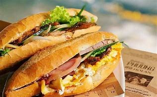
Bánh Mì
“Bánh mì”, niềm tự hào của dân tộc và là đại diện cho tinh hoa ẩm thực Việt.
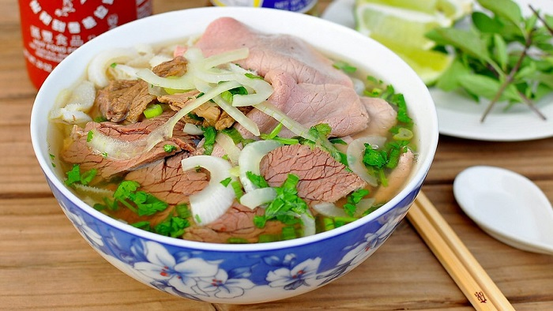
Phở Hà Nội
Đặc sắc ẩm thực Thủ đô
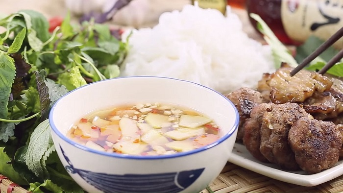
Bún chả Hà Nội
Món ăn đặc sản miền Bắc
Chả cá Lã Vọng
Món ngon có từ lâu đời của Hà thành
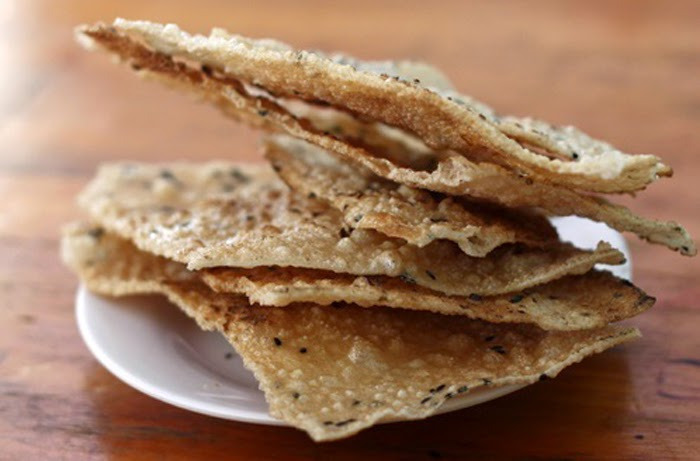
Bánh đa Kiện Khê
Đặc sản miền Bắc làm quà của Hà Nam
Bún bò Huế
Đặc sản dân dã làm say lòng biết bao thực khách
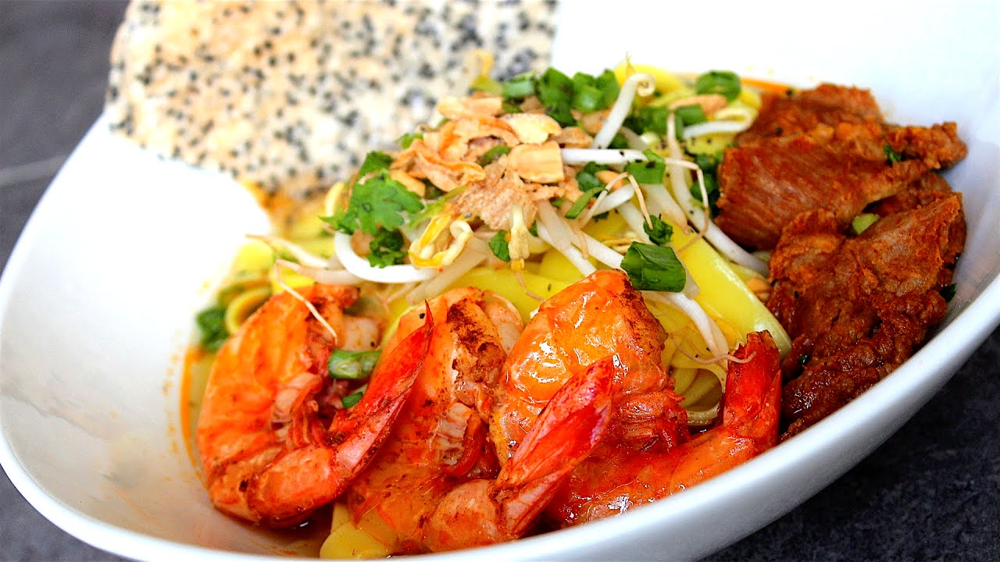
Mì Quảng
Tinh túy ẩm thực Đà Nẵng Quảng Nam
Bánh căn
'Linh hồn' của ẩm thực đất Ninh Thuận
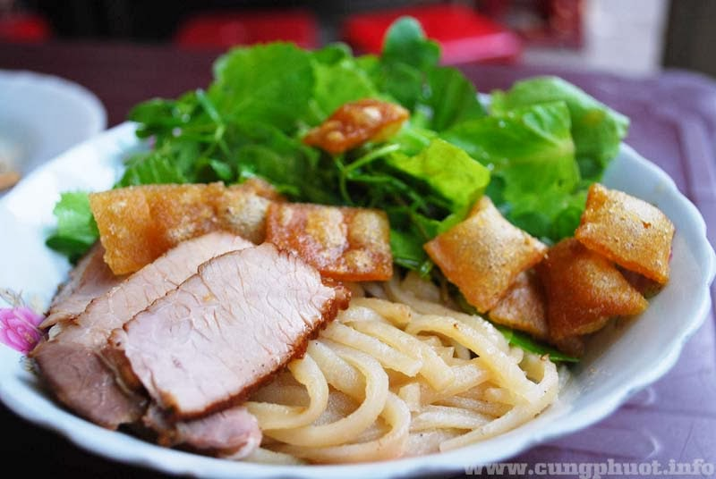
Cao lầu
Nét đặc trưng văn hóa ẩm thực phố Hội
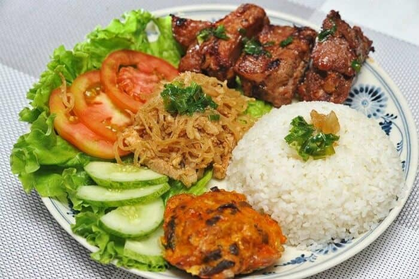
Cơm Tấm Sài Gòn
Cơm Tấm Sườn-Bì-Chả đặc sản Sài Gòn
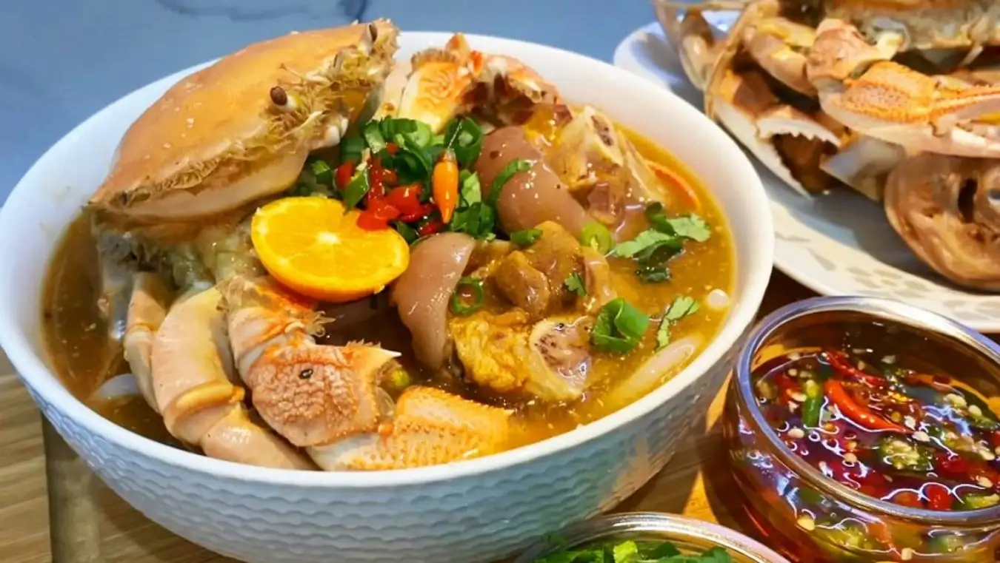
Bánh canh ghẹ
Đặc sản miền Nam nổi tiếng tại khu vực biển Vũng Tàu
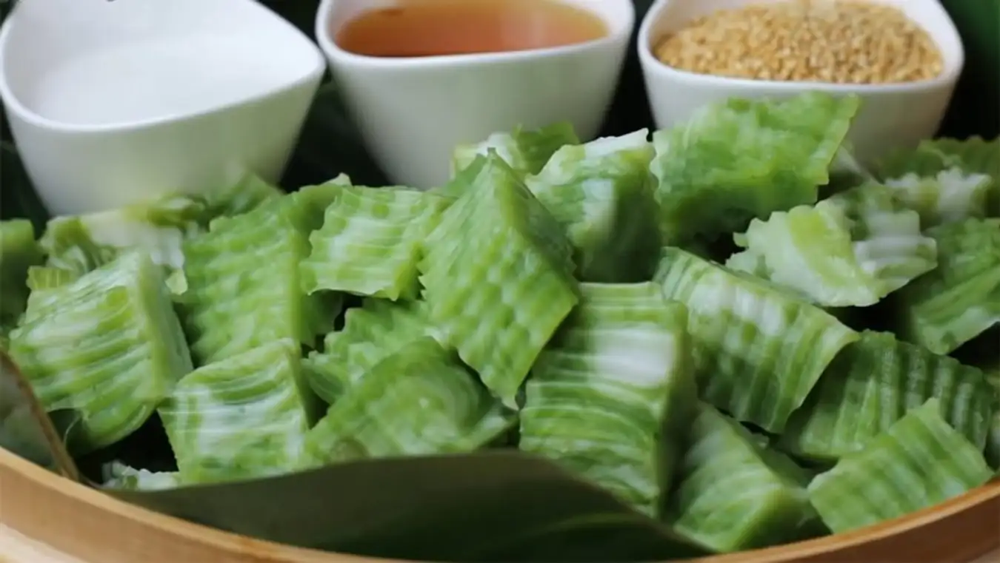
Bánh đúc lá dứa
Bánh đúc lá dứa với vị béo ngậy mê say
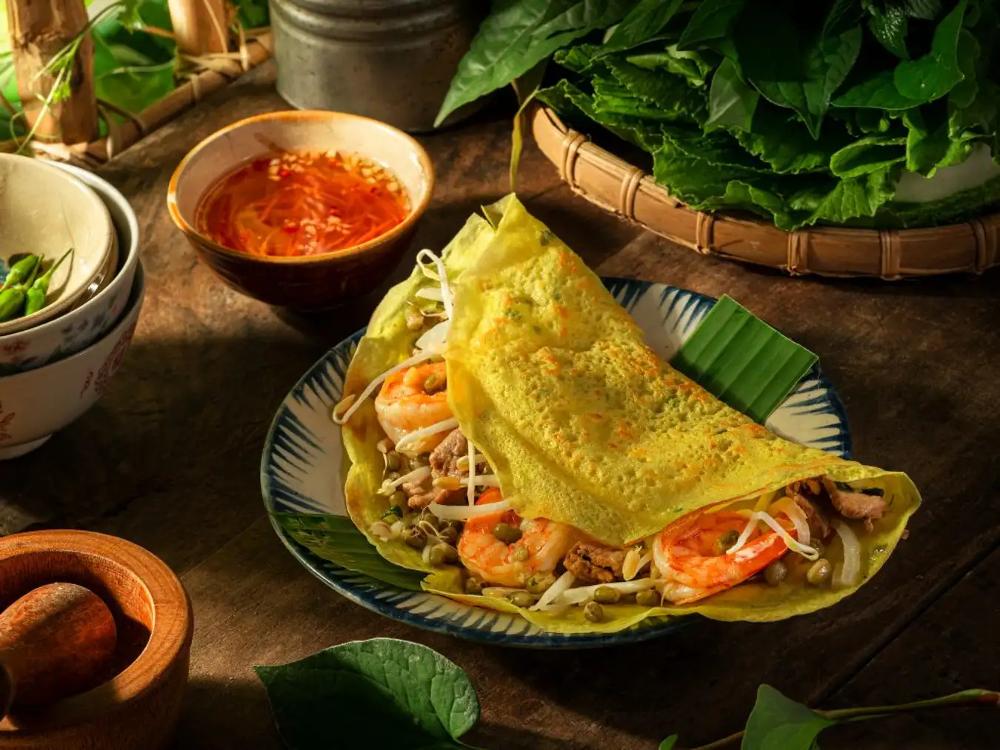
Bánh xèo
Xèo Xèo Xèo....
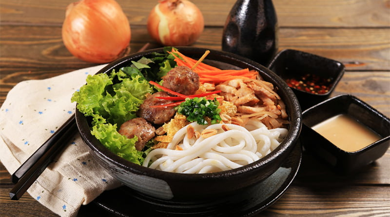
Bánh tằm Ngan Dừa
Đặc sản nổi tiếng ở vùng đất công tử Bạc Liêu
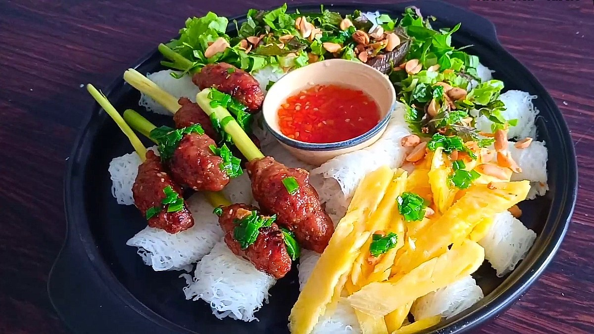
Nem nướng
Đặc sản trứ danh Khánh Hòa
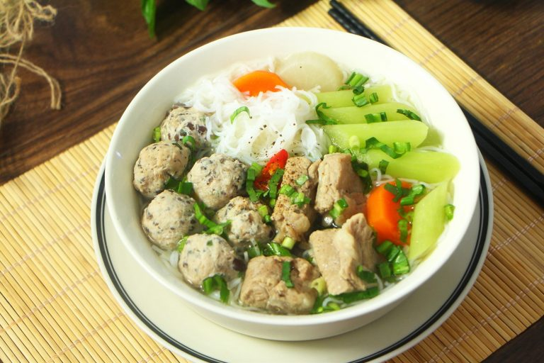
Bún Mọc
Đặc sản nổi tiếng đến từ làng Mọc-Hà Nội.
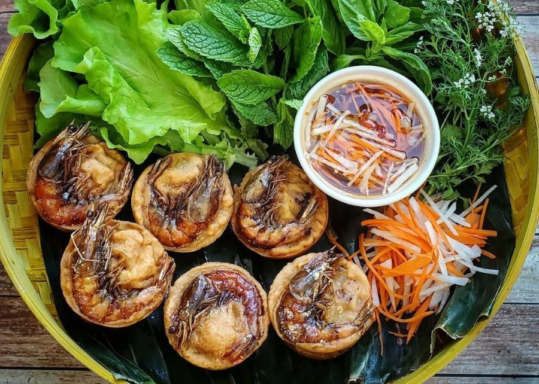